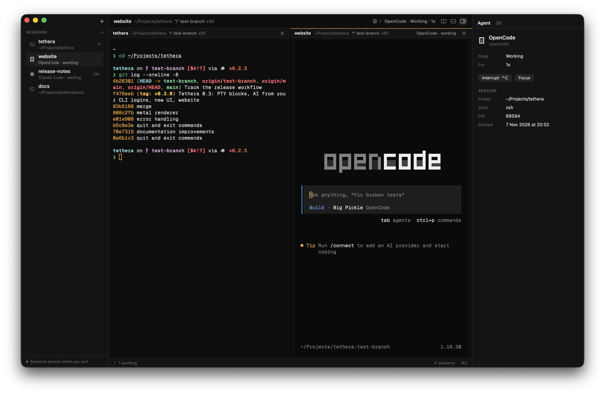
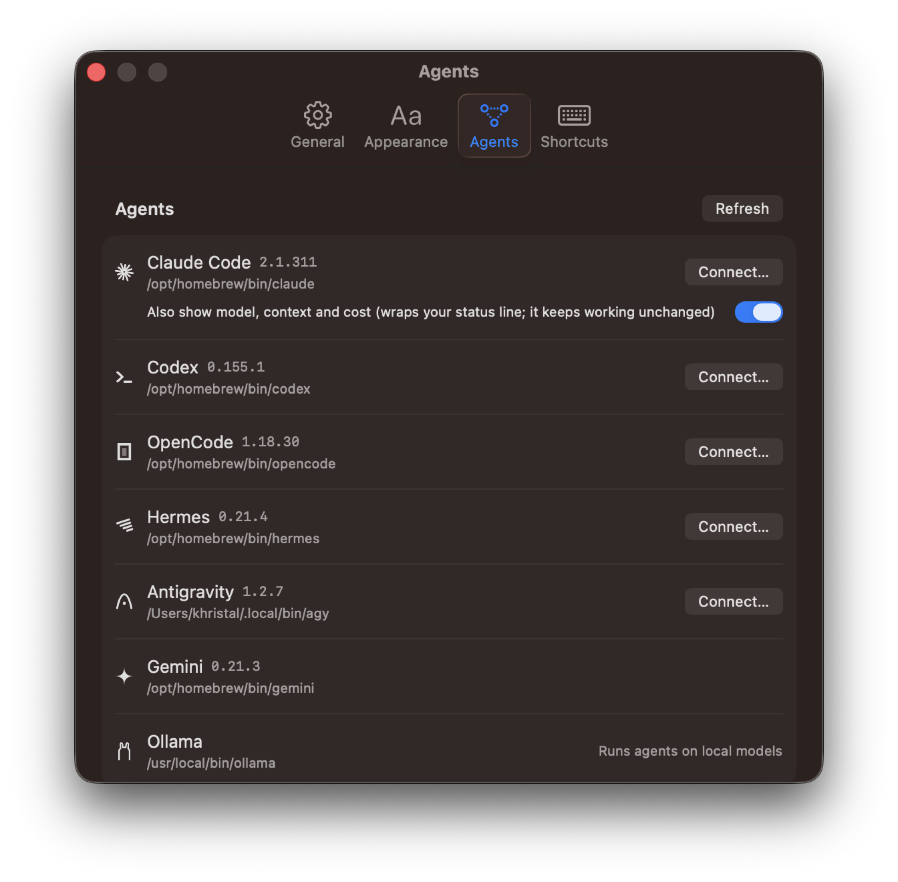
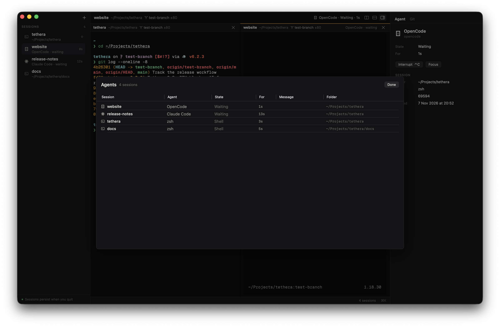
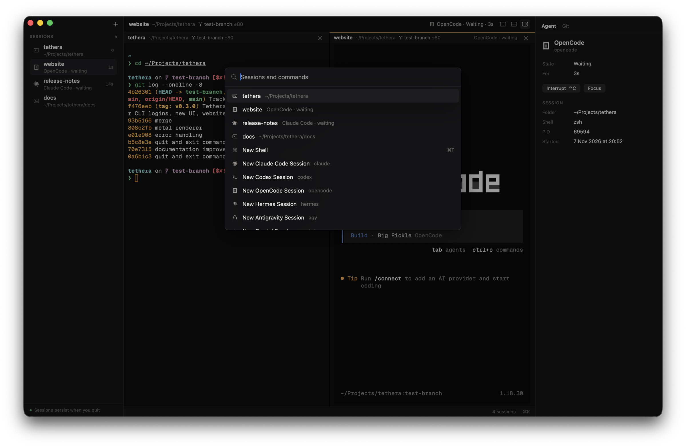
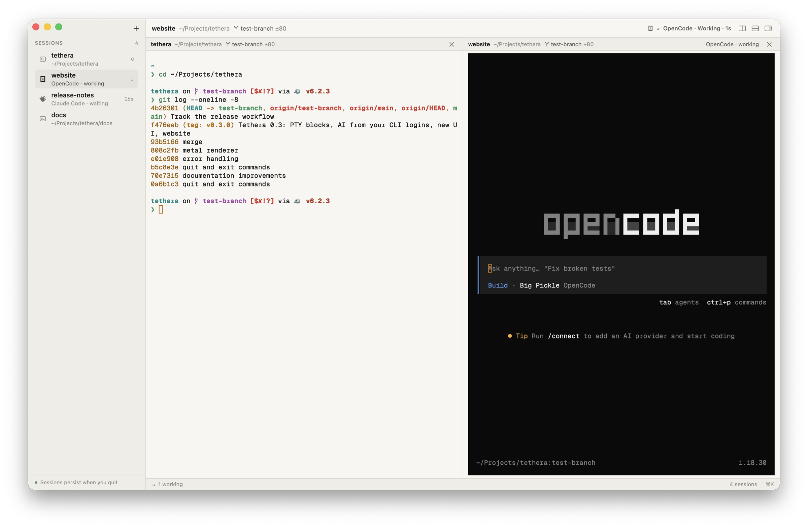
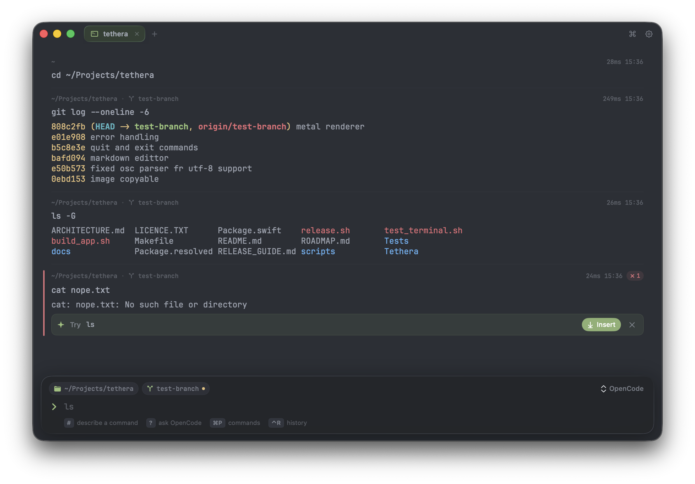

Tethera 0.4 for macOS
Run your coding agents. Know when one needs you.
Tethera is a fast, native terminal built for running and supervising AI coding agents. Every session lives in a background daemon, so your agents keep going after you quit — and the sidebar shows which one is working, waiting, or needs you.

Works with
- Claude Code
- Codex
- OpenCode
- Hermes
- Antigravity
- Gemini
- Ollama
Agents run with your own logins — no API keys, no account. Launch any of them from + in the sidebar; Ollama starts with ollama launch and your local models.
01Sessions
Quit the app. Your agents keep working.
Every session lives in tethera, a background daemon — not in the window. Quit with Command Q and your sessions, and the agents running in them, carry on. Open Tethera again and they’re exactly as you left them.
-
Outlives the agent
Agents launched from + start inside a shell, so the session is still there when the agent exits.
-
Named after its folder
A session takes its folder’s name until you rename it with Shift Command R.
-
Reachable from any shell
The
tetheraCLI lists your sessions and attaches to them — over SSH too.
| Command QQuit Tethera | The window closes. Sessions and their agents keep running. |
|---|---|
| Open Tethera again | Every session is back exactly as it was. |
| Restart your Mac | Sessions return with their history and folder. |
| Option Command QQuit and end all | Tethera quits and ends every session. |
02Agent-aware
See what every agent is doing.
The sessions sidebar shows which agent runs where, and what it’s doing right now. When one needs you, Tethera tells you — even when it’s in the background.
-
Claude Code reports in on its own
Claude Code tells Tethera its state itself, over
OSC 7501. -
One-click Connect for the rest
Settings → Agents adds hooks for Claude Code, Codex, OpenCode, Hermes and Antigravity (
agy), so Tethera sees tool calls, permission requests and finished turns. -
Called back when it matters
A notification and a Dock badge when an agent needs you. Shift Command U jumps straight to it.

Your configs, never changed behind your back.
Connect adds hooks to each agent’s own config. You see exactly what changes before it happens, and you can always go back.
- Shown as a diff first. Every config change is previewed before it’s written.
- Backed up. The original file is kept.
- Reversible. Undo a connection whenever you like.
03At a glance
Every session, one keystroke away.
One table for all of your agents, an inspector for the one you’re in, and a palette for everything else.



Inspector Option Command I
The Agent tab shows state, message and tool — plus model, context and cost once the agent is connected — and can interrupt it. The Git tab stages, commits, fetches, pulls and pushes.
A real terminal underneath
Classic, fast panes on SwiftTerm with Metal GPU rendering, running your own zsh or bash — configured your way. Split with Command D and Shift Command D.
Fonts that just work
Nerd Font icons render out of the box. Geist Mono, IBM Plex Mono and JetBrains Mono come bundled.
04v0.3 → v0.4
From block terminal to agent terminal.
v0.3 wrapped every command in a block. v0.4 is a classic terminal with your sessions and agents alongside it. Drag the divider — or focus it and use the arrow keys.

05Keyboard
Fast from the keyboard.
The shortcuts you’ll use every day.
| New shell | Command T |
|---|---|
| Next / previous session | Command right bracketCommand left bracket |
| Go to the session that needs you | Shift Command U |
| Rename session | Shift Command R |
| End session | Option Command W |
| Quit Sessions keep running | Command Q |
| Quit and end all sessions | Option Command Q |
| Command palette | Command K |
|---|---|
| Agents overview | Shift Command A |
| Inspector | Option Command I |
| Split right | Command D |
| Split down | Shift Command D |
| Close pane | Command W |
06Command line
Your sessions, from any shell.
The tethera command talks to the same daemon as the app — so a session you start in one place is there in the other.
$ tethera list
$ tethera new --attach
$ tethera attach <name>- tethera list
- List your sessions.
- tethera new --attach
- Start a new session and attach to it.
- tethera attach <name>
- Attach to a running session by name. Works over SSH.
SSH into your Mac and attach to a running session. Full remote control is the next step.
07Roadmap
What’s next.
None of this is in v0.4 yet. It’s where Tethera is headed.
08Install
Get Tethera.
Free and open source. No API keys and no account — your agents run with the logins you already have.
Install the app
Three steps, one of them only the first time.
-
Download the DMG
Get Tethera-macOS.dmg — for Apple silicon and Intel.
-
Drag to Applications
Open the DMG and drag Tethera into your Applications folder.
-
Open it the first time
Right-click Tethera.app → Open → Open. You only need to do this once.
Or clear the quarantine flag from a terminal:
xattr -dr com.apple.quarantine /Applications/Tethera.app
Build from source
Clone the repository and run it.
$ git clone https://github.com/Tsogbat/tethera.git
$ cd tethera
$ make runRequirements
- macOS 14 Sonoma or later
- Apple silicon or Intel
- To build: Xcode 26
- For agents: Claude Code, Codex, OpenCode, Hermes, Gemini, Antigravity or Ollama, signed in as you — no API keys